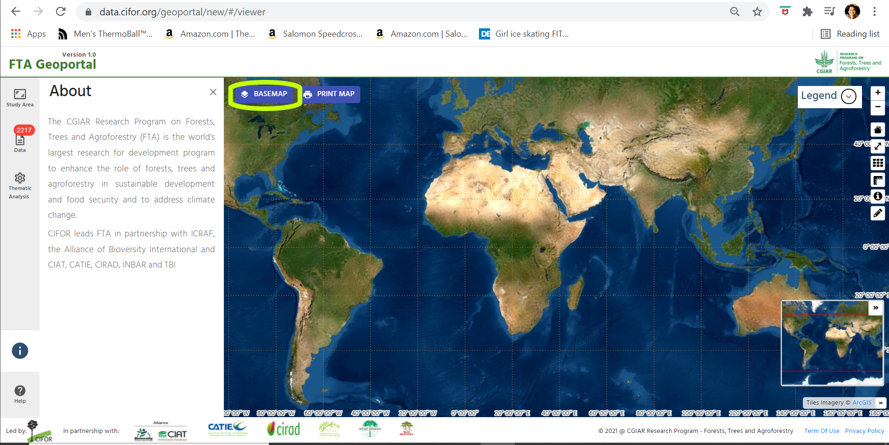
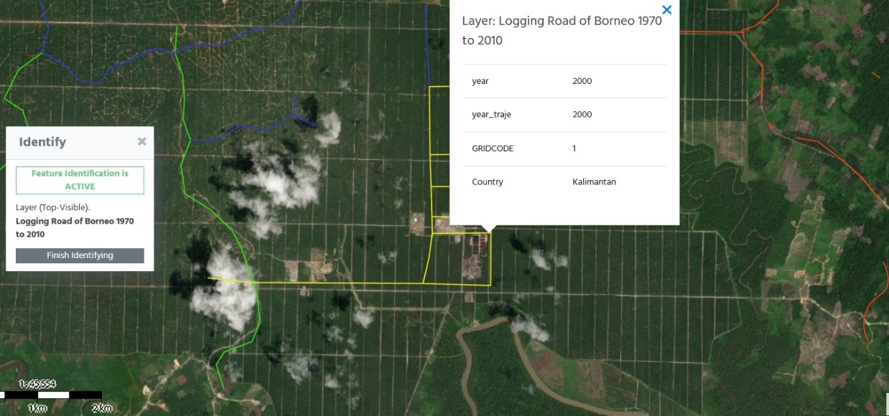

Introduction
As a collaborative research project, involving numerous researchers from member organisations, data sharing is important for FTA to optimise the use of their data inventory as well as for exchanging their knowledge, thus improving the quality and exposure of FTA research. This geoportal has been designed and developed as a system that can facilitate effective and efficient (geospatial) data access to, and data sharing among, internal data inventory as well as that of other organisations. Moreover, this geoportal is also expected to fulfil the need for showcasing or disseminating FTA research to a wider community/audience.
This geoportal is a web-based entry point or gate to available spatial data or geographic contents and associated services from the FTA Data inventory. It allows users to discover, select, access the data and, to some extent, use the data for certain analysis, mainly visual. It provides functionalities that can assist users to perform these tasks.
Browse the spatial data or maps
These are the steps for searching data in the geoportal, using keywords and/or topics of interest:
1. Click the Data button on the geoportal main page (Figure 1) to open the data tab (Figure 2) and click on BROWSE button provided on the opened data tab.
2. When the browse/search window (Figure 3) pops up, there are 5 sections that will help you search for data.
In Figure 3, you can see the browse page consists of 5 sections:
Section 1 is the search criteria
Section 2 shows the results of your search
Section 3 is the information about the data from the metadata of the selected data on the list (search results in section 2)
Section 4 shows the thumbnail for the selected data
Section 5 provides the users with information about the structure of the data (attribute table)
Find a specific map
You can search for a specific map by applying a given set of criteria to filter your data search, section 1 on Figure 3. Filter your data selection using a dropdown list in each criterion and/or by typing in a keyword in the search title. The number of selected datasets that fit your search criteria, i.e. 'Organisation=Cifor AND Year=2021' are given in the 'Available Dataset' (in the bracket) on section 2 of the browse page (Figure 3).
Selecting a study area
You can search spatial data based on their location using a bounding box (an area defined by two longitudes and two latitudes) or a given administrative boundary. In order to do so, you can:
1. Click on Study Area button on the main page to open the study area tab (Figure 4).
2. Click on either SELECT AREA button to select your data based on administrative boundaries (Figure 5), or DRAW BBOX button to draw your own bounding box on the map viewer.

Please be aware that the selection algorithm is based on the 'overlap polygon topology rule'.
Add data to the map
Once you have finished with the data searching process and find your desired spatial data, select the dataset from the list and click the ADD AND CONTINUE BROWSING button to bring the dataset onto the map viewer and continue your data search, or you can click the ADD AND FINISH BROWSING button if there is no more data to be selected. You can add mutiple spatial datasets or maps onto the map viewer.
When you have finished browsing and adding spatial data onto the map viewer, you can view the dataset (Figure 6) and use the functionalities provided by the geoportal:
Note: Sometimes maps do not show up on the viewer right a way due to the loading process. You might need to untick and re-tick the visible button to bring-up the map onto the viewer.
1. Click on the three dots icon at the right-end side of the data title to open the functionalities (Figure 7).
2. Select and click on the dropdown list menu: Zoom To (selected layer), View Metadata (if you want to open metadata viewer and read the data description), and file type (should you want to download the selected data).
Learn about data
Users can use this geoportal to learn about, and assess the relevance of, spatial data before they finally select the data. There are several ways to learn about the data, but the most common is by looking at the surrounding information and that which comes with the data, provided in metadata.
This geoportal is developed based on metadata at its core. Data owners tend to provide information about spatial data in their metadata while other information is presented in the geoportal, section 3 in Figure 3. For example, you can select the data you are interested in from the available data list (Section 2 in Figure 3), and to obtain more information about the data you can read the relevant information at the metadata section (section 3). Users might also need to check the thumbnail of the selected data, as seen on section 4 in Figure 3, to see what the data looks like, and find the structure of the data attribute on section 5. You can also learn about the data by looking at the data directly in the map viewer or map section once you open the selected data. The geoportal also provides the functionality to open the metadata and quality of the data after the data is opened.
Add (import) your own data
Most of the time, spatial data users will have their own data and want to compare the available data from the geoportal with theirs, to see how their data fit with the available data or vice versa. Beside the data provided by and available from the geoportal, you can also add your own spatial data onto the map. The geoportal provides a very useful functionality to accommodate this need. To import your own data:
1. Click on the IMPORT button on the Data Section
2. Open the data selection window by clicking on the CHOOSE FILES button on the Import data window (Figure 8).
3. Search and select the data from your local data storage on the data selection window (Figure 9). Please be aware that at this moment, you can only add spatial data in a zipped shapefile format.
4. Submit the data file and your data will be imported to the map viewer. Users can perform similar activities with data from the geoportal repositories.
Download Data
If the data is downloadable, the link Download will appear along with the format of the data. To download data, there are four main steps:
1. Load the dataset that you want to download into the map viewer.
2. Click the three dots icon (as can be seen on Figure 7 - Map viewer operation) on the layer and select the specific download format such as keyhole markup language (kml), shapefile or portable document format (pdf).
3. Select the format to open the download window (Figure 10)
4. Submit the data file and your data will be imported to the map viewer. Users can perform similar activities with data from the geoportal repositories.
Change Background Map
The background map plays an important role in mapping. For your own preferred mapping style, you might need to change the background map. You can do so by:
1. Activating the selection window, click on BASEMAP button on the map section (Figure 11) and;
2. Select a background map from the list (Figure 12).
Perform basic spatial activity
The geoportal provides basic functionalities for analysis including basic measurements and identification of the quality of the layers (Figure 13). To conduct basic analysis in the geoportal:

1. Add two datasets to the map viewer > Data > Browse > Add and finishing browsing
Note: as a sample we will utilize data 'Logging Roads of Borneo 1970 to 2010' and 'Borneo Intact Logged Forest 2013'.
2. You can zoom in and out, zoom to full extent (world extent), activate or deactivate the grid/graticule lines, measurements, identify objects and draw objects on the (map) screen by first activating the respective buttons (as in Figure 13).
3. Activate legends and explore the layer information.
4. You can use measurements to check the distance from one specific information point to another (i.e., width or size of an intact forest) (Figure 14).
5. You can conduct analysis of specific sites by utilising existing datasets and visual overlays on baseline maps and imageries (i.e., study the existing mills on Borneo and the relationship between roads and intact forests, as shown in Figure 15).
6. You can also draw objects to create your own map using available data from the geoportal.
7. You can compare data using this geoportal. Should you wish to do so, these steps are an example that could follow. You are also able to do other data comparisons as required.
a. Add the two datasets you want to compare, in the same location, to the map viewer (i.e., land cover and land use change in one specific location).
Note: We can use land use and land cover in Irazola District from 2002 and 2015 to compare the change in land use and land cover over the 13-year period.
b. Activate and reactivate both layers to explore the patterns and the difference.
c. Utilize zoom-in and out to provide clear comparisons of both layers.
d. You can focus on specific information (i.e., urban area) to see the pattern of change.

e. Explore the change and assess the spatial pattern and regional relationships.
f. You can use the measurement tools to explore and compare two topics in the same location.
Print Map
If you finish create your own map(s) using available datasets from geoportal, or with your own data, you can printout the map for reporting purposes in pdf format. To print the map, you can do the following steps:
1. Load the dataset(s) that you want to download into the map viewer.
2. Ensure that the content of the map is perfectly shown in the map viewer, including the legend.
3. Click on the PRINT MAP button on the map viewer (Figure 20).
4. Select your choice for the map layout and click in the DOWNLOAD PDF button (Figure 21). The map will be downloaded to your download folder.
Thematic Analysis
The geoportal also provides selected predefined analysis maps that you can explore. However, this function is currently still marginal. Should you wish to do so, just click on the Thematic Analysis button in the geoportal, to open the window.